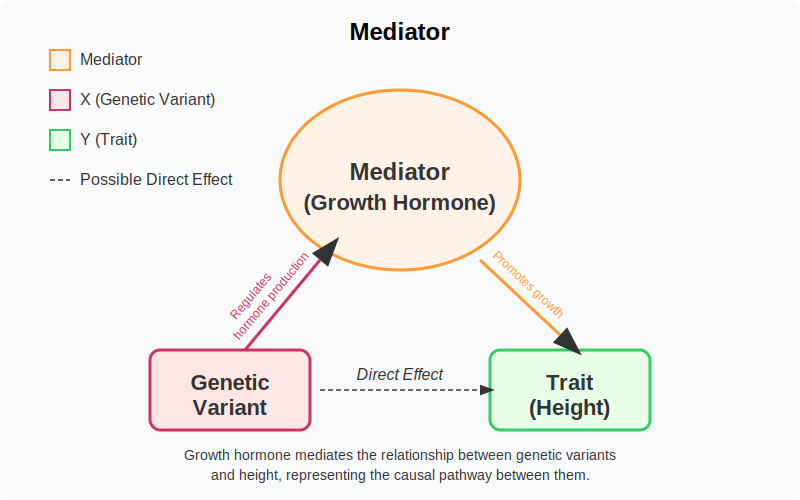

Intuitional Description#
A mediator is a variable that sits in the causal pathway between an exposure and an outcome, explaining the mechanism through which the exposure exerts its effect on the outcome.
Graphical Summary#

Key Formula#
The key formula for the concept of a mediator is represented in a causal diagram as: $\( X → M → Y \)$ Where:
\(X\) is the independent variable (e.g., genetic variant)
\(M\) is the mediator variable
\(Y\) is the dependent variable (e.g., trait)
The arrows (→) indicate the direction of causal influence
This diagram illustrates that a mediator (\(M\)) lies in the causal pathway between the independent variable (\(X\)) and the dependent variable (\(Y\)). The mediator transmits the effect of \(X\) on \(Y\), creating an indirect causal pathway through which \(X\) affects \(Y\).
Technical Details#
A mediator is a variable that explains the mechanism or process by which an independent variable (exposure) influences a dependent variable (outcome). Unlike confounders, mediators are part of the causal pathway and represent how or why an effect occurs.
In formal causal inference terminology, mediation analysis separates the total effect of \(X\) on \(Y\) into:
Direct Effect: The effect of \(X\) on \(Y\) that does not go through \(M\)
Indirect Effect: The effect of \(X\) on \(Y\) that operates through \(M\)
The total effect can be decomposed as:
Unlike confounders which should be controlled for, adjusting for mediators can block the pathway of interest and mask the total causal effect being studied.
Example#
This example demonstrates how to identify and analyze a mediator in genetic association studies. We create a simple dataset with:
Genetic variants for 5 individuals
Height measurements
Growth hormone levels (the mediator)
We perform two analyses:
Total Effect Analysis: The overall relationship between genetic variants and height without considering the mediator
Direct Effect Analysis: The relationship between variants and height while controlling for growth hormone
The example shows how genetic variants can influence height both directly and indirectly through biological mechanisms (growth hormone levels). By analyzing these pathways separately, we can better understand the biological processes underlying genetic associations and quantify how much of a genetic effect is explained by specific biological mechanisms.
# Clear the environment
rm(list = ls())
# Define genotypes for 5 individuals at 3 variants
# These represent actual alleles at each position
# For example, Individual 1 has genotypes: CC, CT, AT
genotypes <- c(
"CC", "CT", "AT", # Individual 1
"TT", "TT", "AA", # Individual 2
"CT", "CT", "AA", # Individual 3
"CC", "TT", "AA", # Individual 4
"CC", "CC", "TT" # Individual 5
)
# Reshape into a matrix
N <- 5 # number of individuals
M <- 3 # number of variants
geno_matrix <- matrix(genotypes, nrow = N, ncol = M, byrow = TRUE)
rownames(geno_matrix) <- paste("Individual", 1:N)
colnames(geno_matrix) <- paste("Variant", 1:M)
alt_alleles <- c("T", "C", "T")
ref_alleles <- c("C", "T", "A")
# Convert to raw genotype matrix using the additive / dominant / recessive model
Xraw_additive <- matrix(0, nrow = N, ncol = M) # dount number of non-reference alleles
rownames(Xraw_additive) <- rownames(geno_matrix)
colnames(Xraw_additive) <- colnames(geno_matrix)
for (i in 1:N) {
for (j in 1:M) {
alleles <- strsplit(geno_matrix[i, j], "")[[1]]
Xraw_additive[i, j] <- sum(alleles == alt_alleles[j])
}
}
X <- scale(Xraw_additive, center = TRUE, scale = TRUE)
# assign observed height for the 5 individuals
Y_raw <- c(180, 160, 158, 155, 193)
Y <- scale(Y_raw)
# assign observed growth hormone levels for the 5 individuals
GH_raw <- c(7.61, 5.18, 5.20, 5.06, 8.72)
GH <- scale(GH_raw)
# Analysis 1: Total effect - Direct regression without mediator
# This shows the total effect of each variant on height
# This is exactly what we did in the summary statistics section
sumstats_total <- data.frame(
SNP = paste0("rs", 1:M),
CHR = c(1, 1, 2),
BP = c(1000, 2000, 5000),
ALT = alt_alleles,
REF = ref_alleles,
N = rep(N, M),
BETA_Total = numeric(M),
SE_Total = numeric(M),
Z_Total = numeric(M),
P_Total = numeric(M)
)
for (j in 1:M) {
SNP <- X[, j]
model <- lm(Y ~ SNP)
summary_model <- summary(model)
# Store results
sumstats_total$BETA_Total[j] <- summary_model$coefficients[2, 1]
sumstats_total$SE_Total[j] <- summary_model$coefficients[2, 2]
sumstats_total$Z_Total[j] <- summary_model$coefficients[2, 3]
sumstats_total$P_Total[j] <- summary_model$coefficients[2, 4]
}
# Analysis 2: Direct effect - Regression controlling for mediator
# This shows the direct effect after accounting for the mediator pathway
sumstats_direct <- data.frame(
SNP = paste0("rs", 1:M),
CHR = c(1, 1, 2),
BP = c(1000, 2000, 5000),
ALT = alt_alleles,
REF = ref_alleles,
N = rep(N, M),
BETA_Direct = numeric(M),
SE_Direct = numeric(M),
Z_Direct = numeric(M),
P_Direct = numeric(M)
)
for (j in 1:M) {
SNP <- X[, j]
model <- lm(Y ~ SNP + GH) # Control for the mediator
summary_model <- summary(model)
# Store results
sumstats_direct$BETA_Direct[j] <- summary_model$coefficients[2, 1]
sumstats_direct$SE_Direct[j] <- summary_model$coefficients[2, 2]
sumstats_direct$Z_Direct[j] <- summary_model$coefficients[2, 3]
sumstats_direct$P_Direct[j] <- summary_model$coefficients[2, 4]
}
# Print summary statistics in standard format (before adjusting for ancestry)
print("GWAS Summary Statistics before including growth hormone levels:")
sumstats_total
# Print summary statistics in standard format (after adjusting for ancestry)
print("GWAS Summary Statistics after including growth hormone levels:")
sumstats_direct
[1] "GWAS Summary Statistics before including growth hormone levels:"
| SNP | CHR | BP | ALT | REF | N | BETA_Total | SE_Total | Z_Total | P_Total |
|---|---|---|---|---|---|---|---|---|---|
| <chr> | <dbl> | <dbl> | <chr> | <chr> | <dbl> | <dbl> | <dbl> | <dbl> | <dbl> |
| rs1 | 1 | 1000 | T | C | 5 | -0.5000913 | 0.49996955 | -1.000244 | 0.390901513 |
| rs2 | 1 | 2000 | C | T | 5 | 0.8525024 | 0.30179448 | 2.824778 | 0.066475513 |
| rs3 | 2 | 5000 | T | A | 5 | 0.9866667 | 0.09396605 | 10.500246 | 0.001844466 |
[1] "GWAS Summary Statistics after including growth hormone levels:"
| SNP | CHR | BP | ALT | REF | N | BETA_Direct | SE_Direct | Z_Direct | P_Direct |
|---|---|---|---|---|---|---|---|---|---|
| <chr> | <dbl> | <dbl> | <chr> | <chr> | <dbl> | <dbl> | <dbl> | <dbl> | <dbl> |
| rs1 | 1 | 1000 | T | C | 5 | 0.1092447 | 0.03095315 | 3.5293578 | 0.07174753 |
| rs2 | 1 | 2000 | C | T | 5 | 0.0243653 | 0.12787410 | 0.1905413 | 0.86647342 |
| rs3 | 2 | 5000 | T | A | 5 | 0.2183809 | 0.35630560 | 0.6129035 | 0.60235017 |
Supplementary#
slide 62 from Xin He’s slides
slide 65 from Xin He’s slides
slide 30-34 from Gao Wang’s slides
slide 348-350 from GW